|

Arii 1/48 Ki-61 Hien "Swallow"
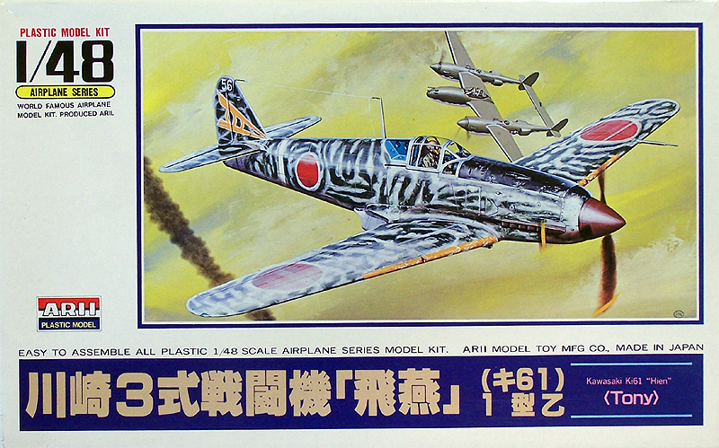
Kit #A323-800
MSRP $14.00
Images and text Copyright © 2006 by Matt Swan
Developmental Background
Dr. Richard Vogt is a name familiar to fans of German aircraft, especially those eccentric Blohm and Voss designs but it is also a name that is connected to this fast and powerful Japanese fighter. Prior to the Second World War Dr. Vogt worked as the head designer for the Kawasaki Aircraft Engineering Company and only returned to Germany to work for B&V in 1933. During this period Japanese aircraft design focused on nimble, maneuverable aircraft but Dr. Vogt's belief in the merit of inline liquid cooled engines as a source of power and speed continued to influence Kawasaki designers for years after he left. In 1940 a Kawasaki engineering team visited Daimler-Benz in Stuttgart and obtained plans for the DB-601A engine being developed for use in the Me-109 which were then built under license for use in a new interceptor being development by Kawasaki.
The Imperial Japanese Army was beginning to feel that a single minded devotion to agility and light weight in a fighter might be mistaken and were beginning to look for a more powerful and heavier armored fighter which Kawasaki was selected to create and this became the Ki-61. The initial interceptor program intended to use the Japanese version of the DB-601A engine ultimately failed but provided plenty of lessons learned that went into the Ki-61 general fighter program. In the spring of 1943 the Ki-61 code named Tony by the Allies had entered service in New Guinea. It was not a completely trouble free introduction as the new water cooled engine had a tendency to overheat in tropical conditions and even though the aircraft's armament was heavy compared to previous fighter designs it still was not sufficient to bring down the heavily armed Allied bombers.
An improved version of the Ki-61 went into production in January of 1944 featuring two 20mm cannons in the nose and 12.7mm guns in the wings. A few bomber interceptors were also built featuring 30mm cannons in the wings and 12.7mm guns in the fuselage. Later models deleted the retractable tail wheel in favor of a fixed tail gear and increased the length of the fuselage slightly and included wing hard points to handle 500 pound bombs or drop tanks. By time production ceased at the end of the war over 2600 examples of the Ki-61 had been manufactured of all variants.
The Kit
While this particular boxing says Arii on the label it can also be found under the Otaki label. It is of older design having been originally released in the 1970s and at that time was way ahead of the rest of the modeling industry. Even today it is still a good kit. The kit is fairly simple with just a couple of sprues of parts in the box but does include a reasonable representation of the Japanese version of the DB-601 engine. As can be seen on virtually all the Otaki/Arii kits this one has a somewhat exaggerated rivet detail across all the exterior aircraft parts. It also features nicely engraved panel lines, no noticeable flash, minimal mold separation seams and small sprue gates. On the down side there are several slightly raised injector pin markings on exterior surfaces that need to be shaved off and the size verses features of the aircraft are somewhat in conflict. What I mean by this is the kit includes drop tanks and has large mounting holes in the lower wing surfaces as found on the post 1944 modified version of the fighter however the fuselage is somewhat short which would match the earlier 1943 version which did not have drop tanks. And one further note on the drop tanks - they have perfectly straight mounting surfaces which have to mate to a slightly curved wing surface so some heavy handed sanding is needed to make them fit properly.
The drop tanks are the only items with any serious fit issues, the fuselage mates up well and so do the wings. There is a slight gap at the upper wing root seam but nothing any competent modeler can't take care of with just a little putty. Interior detail of the landing gear is molded in place and is not bad however the prominent secondary door retraction bars are not included with the kit. The landing gear bays are very shallow and some work will be necessary if the modeler chooses to display this kit in a gear-up configuration. Cockpit detail is kind of brief but manageable but the pilot figure that is included has some serious scale issues - this guy has a really big head and poor body detail. The single clear part allows for a closed canopy only. The part does have reasonable clarity and well defined raised frame lines but the plastic material is very thick across the top and would be about impossible to cut apart to display open.
Taking a parts count we have forty seven pieces done in a high pressure light gray polystyrene and a single clear part for a total of forty eight pieces in the box, a fairly small count indeed.
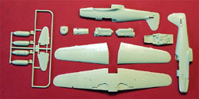
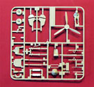
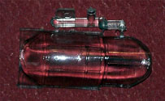
You may click on the small images above to view larger pictures.
Decals and Instructions
This is where a little previous modeling experience comes in handy, the directions for this kit as with all Arii kits are very brief and all in Japanese. We get a single sheet of paper printed with brown ink covering three exploded construction views along with a profile and top view of the model. There does not appear to be any color reference and that shown on the Boxart, at least for the interior color, is incorrect. One last item on the instruction sheet is a simple parts map. A second full color glossy sheet is included showing two aircraft color schemes and marking placements unfortunately neither of these are for the decals included with the kit.
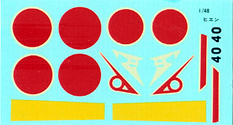
The kit includes a single small sheet of screen printed decals that include yellow leading edge wing bands, basic Hinomarus and two sets of tail markings. Neither set of tail markings match up to anything on the glossy sheet inside the box or to the exterior Boxart so the modeler is pretty much on his own here. The decal quality is not that great either; previous experience with these decals indicates they tend to come apart during application. Color density is not that great but print registry seems good. You may click on the small decal image to view a full sized scan of the sheet.
Aftermarket
There are several aftermarket items kicking around that are suitable for this kit, Eduard makes a couple of nice colored photo etched sets for the interior along with a very comprehensive exterior detail set that costs about three time what the base model costs. Eagle strike carries several decal sheets aimed at the Ki-61 under the Aeromaster name-tag and under the Eagle Strike name tag and I strongly suggest you look at these to replace the poor kit decals. Squadron offers a replacement vacuformed canopy specifically for the Arii/Otaki boxing of the Ki-61 in addition to a separate set for the Hasegawa version of this aircraft. At the very least the vac canopy and a set of aftermarket decals are in order to build this kit.
Construction
Recently I have been involved with a series of fairly complex builds with lots of aftermarket stuff and plenty of kit surgery and wanted to take a break to build something simple and fun. I've already done several Arii kits and have enjoyed every one of them so I dug this one out of the stash and jumped right in. From start to finish I have about nine days involved in building this kit. Construction for the most part was very straight forward so I will not spend a lot of time beating that horse but painting was an exercise in working with lacquer so will talk a little more on that subject. I had decided ahead of time on a couple points for this model; number 1, it would be done as a gear-up project to accompany (aggressively) my PB4Y-1 hanging from the ceiling, number 2, it was going to be done in a natural metal finish because I was getting tired of doing faded drab schemes and, number 3, as an in-flight model would need a reasonably good pilot figure. I already have a nice selection of Alclad 2 lacquer paints on hand so immediately began searching internet hobby shops for a suitable set of decals. I found exactly what I wanted in an old Aeromaster set #48-133 but this set was out of production. Off I went to Evil-Bay and found a set almost immediately. The only hold up here was they had just been listed on a week long auction so I was going to have to be patient on this score. Eagle Strike's web site did feature a full color scan of the instructions so at least I had access to proper painting guidelines while I waited.
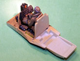
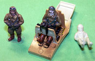
As with most kits construction begins with the cockpit. The kit Boxart shows the interior as being teal green but this is incorrect, the interior of the Ki-61 should be a dark sand color which can be closely replicated with RLM-79 German Sand and that is exactly what I used. The dash was detailed with some Mike Grant instrument decals and the sorry kit gun sight was replaced with a scratch build lens. The kit pilot was not even worth saving in the spares box, I went to a set of standing pilots from Hasegawa, selected a good looking standing Japanese pilot and sliced him up to be repositioned seated. In the second image to the left you can see the original standing figure and the new seated figure in place and the inferior kit figure at the right.
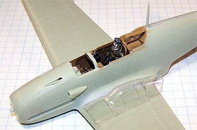
After a few hours of fiddling the new pilot was painted and in place - the pit was then installed to the fuselage. I was not going to have the engine exposed so it was simply glued together and put in place to hold the propeller shaft. The fuselage went together well with only a little Mr. Surfacer 500 needed along the seam. The propeller, exhaust shrouds and drop tanks were cleaned up, mounted on toothpicks and airbrushed. I ground out the interior of the landing gear wells with my Dremel to make the doors fit in a closed position and filed a slight curve to the upper sides of the drop tank mounts then glued them in place. Since this is going to be a NMF all seams were carefully detailed including those for the drop tank mounts. The kit does have a slight issue with the forward deck right in front of the windscreen but the new Squadron canopy includes an extended apron to correct this. I had to remove the fuselage material here and test fit the new piece several times until a good fit was achieved. After the new canopy was Futured and cured I tacked it in place with superglue and accelerator then filled the rest of the seams with clear parts cement and Mr. Surfacer 500 along the front seam. This was sanded down then painted RLM-79 for interior coloration.
Tail surfaces were placed, filled and sanded and the antenna mask and pitot tube went in place. The pitot tube has a fat little mounting stud that had to be trimmed down and sanded flush with the leading edge of the wing. The tail wheel was also glued in place at this time. I spent an hour going over the model surface very carefully looking for any surface defects. All seams were double checked and buffed with 600 grit sand paper. So far I have two days invested in this kit and she looks ready for some primer - not bad, not bad at all.
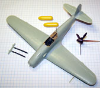
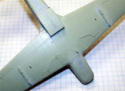
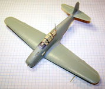
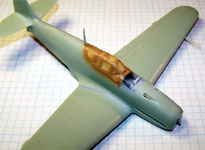
You may click on these small images to view larger pictures
Time for some paint. Whenever I am working with Alclad lacquer paints I use Krylon Gloss Black rattle can paint as my primer for two reasons; #1 being a lacquer based paint it will bond very well with the plastic and not react with the Alclad and, #2 the black color will give the final metal color a deeper glow or depth of color. I simply decant some paint from the rattle can by shooting it through a large milkshake straw into a collection cup then transfer this to my airbrush. With my Badger 360 airbrush set at 18psi and with range at about 5 inches I give the model three light coats of black followed by a forth heavy wet coat. The model is set aside to dry for a few hours. The paint is not completely hard yet but safe to handle so I can continue painting.
Starting with Alclad White Aluminum I paint the entire model applying four light coats to get good color density. This dries overnight then I can mask off the leading edge areas and anti glare panel. The leading edges of the wings are done with enamel flat yellow cut 50% with lacquer thinner. The glare panel, while technically should be blue black, is done with flat black again cut 50% with lacquer thinner. Next the wing spar area, gun access panels and radio access panel are masked off. Using my Waldron punch I made some round masks for various service ports and masked them off as well. This was done on both upper and lower surfaces then these areas were shot with Alclad Magnesium to provide contrasting panels. The flight control surfaces were done with enamel Japanese Army Light Gray cut 50% with lacquer thinner. Take note all my enamel paints are cut 50% with lacquer thinner. The model is flipped over and the gear doors are masked off and done with flat red.
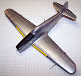
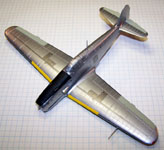
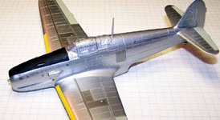
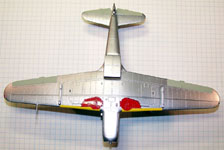
You may click on these small images to view larger pictures
It's time to let this cure overnight again. With the start of the next modeling session the tail surfaces are masked off and airbrushed flat red. The wings are masked off and flat white is applied to make the identification bands. The drop tanks and exhaust shrouds are attached next. Normally when working with Alclad I do not use Future prior to applying decals however with some of these areas being flat paints I went ahead and Futured the entire model. When airbrushing Future I find I get the best results if the Future is cut 25% with isopropyl alcohol first.
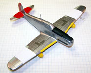
So now I have this kit ready for decals in just under a week but wait, where are my decals???? That auction has not even ended yet!!! I still have a day and a half before the bloody auction ends plus the guy doesn't take pay pal so I'm going to have to wait for a check to get there and then more waiting for the decals to get here. This is killing me!
The model has been setting on the sideboard for a week now and the decals have just arrived in the mail and they are perfect - it was worth the wait. Jumping right in the decals are applied with small amounts of Micro-Sol to help them settle into all these little rivet holes. Once all decals are in place and dry they are sealed with another coat of Future. I want this to be a fairly new looking build so will apply only small amounts of weathering to the identification bands and red painted areas. This is done with a light brown sludge wash then sealed with a brush coat of Polly Scale clear flat on the colored surfaces only - I want those NMF surfaces to remain nice and shiny. Last thing to do here is the antenna. This is made from invisible thread drawn across a black magic marker and attached with very fine spots of medium super glue. The masks are removed and the propeller is attached - she is done.
Some of these images are photo shopped where I shot them in front of a blue screen, removed the background on the computer and placed the remaining image over free cloud images picked up off the internet.
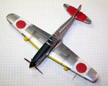
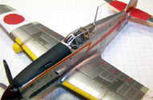
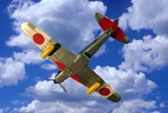
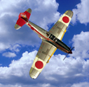
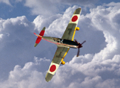
You may click on these small images to view larger pictures
Conclusions
This was a fun kit to build, in fact every Arii kit I have ever done was fun and turned out great. The parts fit together well, instructions are not that great but with some careful study this can be assembled without serious headache. The decals basically suck and need to be replaced with aftermarket stuff and same for the canopy. With just a little effort this builds into a great looking kit for either shelf display or ceiling display and is still available through most internet hobby shops. I highly recommend it for modelers of all skill levels.
|


{kind=link}
{kind=link}
{kind=link}
{kind=link}
{kind=link}
{kind=link}
{kind=link}
{kind=link}
{kind=link}
{kind=link}
{kind=link}
{kind=link}
{kind=link}
{kind=link}
{kind=link}
{kind=link}
{kind=link}
{kind=link}
{kind=link}
{kind=link}